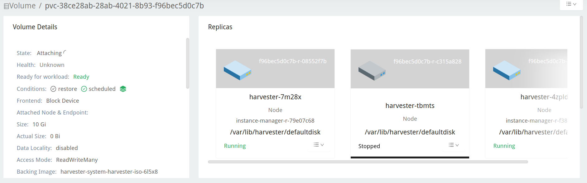

|
Dieses Dokument wurde mithilfe automatisierter maschineller Übersetzungstechnologie übersetzt. Wir bemühen uns um korrekte Übersetzungen, übernehmen jedoch keine Gewähr für die Vollständigkeit, Richtigkeit oder Zuverlässigkeit der übersetzten Inhalte. Im Falle von Abweichungen ist die englische Originalversion maßgebend und stellt den verbindlichen Text dar. |
Upgrade von v1.1.2 auf v1.2.0 (nicht empfohlen)
|
Aufgrund der bekannten Probleme in v1.2.0: Wir empfehlen nicht, auf v1.2.0 ein Upgrade durchzuführen. Bitte führen Sie ein Upgrade Ihres v1.1.x Clusters auf v1.2.1 durch. |
Allgemeine Informationen
|
Bevor Sie ein Upgrade starten, können Sie das Pre-Check-Skript ausführen, um sicherzustellen, dass der Cluster in einem stabilen Zustand ist. Für weitere Details besuchen Sie bitte diese URL für das Skript. |
Sobald eine Upgrade-fähige Version verfügbar ist, wird auf dem Harvester GUI-Dashboard eine Upgrade-Schaltfläche angezeigt. Für weitere Details siehe ein Upgrade starten.
Für das Air-Gapped-Upgrade siehe ein Air-Gapped-Upgrade vorbereiten.
Bekannte Probleme
1. Ein Upgrade kann nicht gestartet werden und meldet "validator.harvesterhci.io" denied the request: managed chart rancher-monitoring is not ready, please wait for it to be ready
Wenn ein Cluster mit einem Speichernetzwerk konfiguriert ist, kann ein Upgrade nicht mit der folgenden Nachricht gestartet werden.

2. Ein Upgrade ist in Creating Upgrade Repository festgefahren.
Während eines Upgrades ist Upgrade-Repository erstellen im Zustand Ausstehend festgefahren:

Bitte führen Sie die folgenden Schritte aus, um zu überprüfen, ob der Cluster auf das Problem stößt:
-
Überprüfen Sie den Upgrade-Repository-Pod:

Wenn das
virt-launcher-upgrade-repo-hvst-<upgrade-name>Pod inContainerCreatingbleibt, könnte Ihr Cluster auf dieses Problem gestoßen sein. In diesem Fall fahren Sie mit Schritt 2 fort. -
Überprüfen Sie das Upgrade-Repository-Volume in der Longhorn GUI.
-
Navigieren Sie zur Volume Seite.
-
Überprüfen Sie das Upgrade-Repository-VM-Volume. Es sollte an einem Pod mit dem Namen
virt-launcher-upgrade-repo-hvst-<upgrade-name>angeschlossen sein. Wenn eines der Replikate des Volumes inStoppedbleibt (graue Farbe), hat der Cluster das Problem.
-
Verwandtes Problem:
-
Behelfslösung:
-
Löschen Sie das
StoppedReplikat aus der Longhorn-GUI. Oder:
-
3. Ein Upgrade ist festgefahren, wenn ein Knoten vorentleert wird.
Ab v1.1.0 wartet Harvester, bis alle Volumes gesund sind (wenn die Anzahl der Knoten >= 3 ist), bevor ein Upgrade am Knoten durchgeführt wird. Im Allgemeinen können Sie den Zustand der Volumes überprüfen, wenn ein Upgrade im "Pre-Draining"-Zustand festgefahren ist.
Besuchen Sie "Access Embedded Longhorn", um die Anleitung zum Zugriff auf die eingebettete Longhorn GUI zu sehen.
Sie können auch die Protokolle des Vorentleerungsjobs überprüfen. Lesen Sie hierzu bitte Phase 4: Upgrade-Knoten in der Fehlerbehebungsanleitung.
4. Ein Upgrade ist beim Aktualisieren des ersten Knotens festgefahren: Der Job war länger aktiv als die angegebene Frist.
Ein Upgrade schlägt fehl, wie im Screenshot unten gezeigt:

5. Ein Upgrade steckt im Zustand "Vorentleert" fest
Sie könnten sehen, dass ein Upgrade im Zustand "vorentleert" feststeckt:

In diesem Stadium sollte Kubernetes die Arbeitslast auf dem Knoten entleeren, jedoch können verschiedene Gründe dazu führen, dass der Vorgang ins Stocken gerät.
5.1 Der Knoten enthält einen Longhorn instance-manager-r Pod, der Volumes mit nur einer Replik bedient.
Longhorn erlaubt es nicht, einen Knoten zu entleeren, wenn der Knoten das letzte überlebende Replikat eines Volumens enthält. Um zu überprüfen, ob ein Knoten in diese Situation gerät, befolgen Sie diese Schritte:
-
Listen Sie die einzelnen Replikate von Volumen mit dem Befehl auf:
kubectl get volumes.longhorn.io -A -o yaml | yq '.items[] | select(.spec.numberOfReplicas == 1) | .metadata.namespace + "/" + .metadata.name'
Beispiel:
$ kubectl get volumes.longhorn.io -A -o yaml | yq '.items[] | select(.spec.numberOfReplicas == 1) | .metadata.namespace + "/" + .metadata.name' longhorn-system/pvc-d1f19bab-200e-483b-b348-c87cfbba85ab
-
Überprüfen Sie, ob das Replikat auf dem feststeckenden Knoten liegt:
Listen Sie die NodeID des Replikats des Volumens mit dem Befehl auf:
kubectl get replicas.longhorn.io -n longhorn-system -o yaml | yq '.items[] | select(.metadata.labels.longhornvolume == "<volume>") | .spec.nodeID'
Beispiel:
$ kubectl get replicas.longhorn.io -n longhorn-system -o yaml | yq '.items[] | select(.metadata.labels.longhornvolume == "pvc-d1f19bab-200e-483b-b348-c87cfbba85ab") | .spec.nodeID' node1
Wenn das Ergebnis zeigt, dass das Replikat auf dem Knoten liegt, auf dem das Upgrade feststeckt (in diesem Beispiel, node1), hat Ihr Cluster dieses Problem.
Es gibt einige Möglichkeiten, um diese Situation zu beheben. Wählen Sie die am besten geeignete Methode für Ihre VM:
-
Fahren Sie die VM herunter, die das einzelne Replikatvolumen verwendet, um das Volumen zu trennen, damit das Upgrade fortgesetzt werden kann.
-
Passen Sie die Replikate des Volumens auf mehr als eins an.
-
Gehen Sie zur Volume-Seite.
-
Lokalisieren Sie das problematische Volumen und klicken Sie auf das Symbol auf der rechten Seite, wählen Sie dann Replikatzahl aktualisieren:

-
Erhöhen Sie die Anzahl der Replikate und wählen Sie OK.
5.2 Fehlkonfigurierte Longhorn instance-manager-r Pod Störung Haushaltspläne (PDB)
Ein falsch konfiguriertes PDB könnte dieses Problem verursachen. Um zu überprüfen, ob das der Fall ist, führen Sie die folgenden Schritte aus:
-
Nehmen Sie an, der festgefahrene Knoten ist
harvester-node-1. -
Überprüfen Sie die
instance-manager-eoderinstance-manager-rPod-Namen auf dem festgefahrenen Knoten:$ kubectl get pods -n longhorn-system --field-selector spec.nodeName=harvester-node-1 | grep instance-manager instance-manager-r-d4ed2788 1/1 Running 0 3d8h
Die obige Ausgabe zeigt, dass der
instance-manager-r-d4ed2788Pod auf dem Knoten ist. -
Überprüfen Sie die Rancher-Protokolle und vergewissern Sie sich, dass der
instance-manager-eoderinstance-manager-rPod nicht entleert werden kann:$ kubectl logs deployment/rancher -n cattle-system ... 2023-03-28T17:10:52.199575910Z 2023/03/28 17:10:52 [INFO] [planner] rkecluster fleet-local/local: waiting: draining etcd node(s) custom-4f8cb698b24a,custom-a0f714579def 2023-03-28T17:10:55.034453029Z evicting pod longhorn-system/instance-manager-r-d4ed2788 2023-03-28T17:10:55.080933607Z error when evicting pods/"instance-manager-r-d4ed2788" -n "longhorn-system" (will retry after 5s): Cannot evict pod as it would violate the pod's disruption budget.
-
Führen Sie den Befehl aus, um zu überprüfen, ob ein PDB mit dem festgefahrenen Knoten verbunden ist:
$ kubectl get pdb -n longhorn-system -o yaml | yq '.items[] | select(.spec.selector.matchLabels."longhorn.io/node"=="harvester-node-1") | .metadata.name' instance-manager-r-466e3c7f
-
Überprüfen Sie den Eigentümer des Instanzmanagers für dieses PDB:
$ kubectl get instancemanager instance-manager-r-466e3c7f -n longhorn-system -o yaml | yq -e '.spec.nodeID' harvester-node-2
Wenn die Ausgabe nicht mit dem festgefahrenen Knoten übereinstimmt (in diesem Beispiel stimmt
harvester-node-2nicht mit dem festgefahrenen Knotenharvester-node-1überein), können wir schließen, dass dieses Problem auftritt. -
Überprüfen Sie vor der Anwendung des Workarounds, ob alle Volumes gesund sind:
kubectl get volumes -n longhorn-system -o yaml | yq '.items[] | select(.status.state == "attached")| .status.robustness'
Die gesamte Ausgabe sollte
healthysein. Wenn dies nicht der Fall ist, möchten Sie möglicherweise Knoten entcordonieren, um das Volume wieder gesund zu machen. -
Entfernen Sie das falsch konfigurierte PDB:
kubectl delete pdb instance-manager-r-466e3c7f -n longhorn-system
-
Verwandtes Problem:
-
5.3 Der instance-manager-e Pod konnte nicht entleert werden.
Während eines Upgrades könnten Sie auf ein Problem stoßen, bei dem Sie den instance-manager-e Pod nicht entleeren können. Wenn diese Situation auftritt, sehen Sie Fehlermeldungen in den Rancher-Protokollen wie die unten gezeigten:
$ kubectl logs deployment/rancher -n cattle-system | grep "evicting pod" evicting pod longhorn-system/instance-manager-r-a06a43f3437ab4f643eea7053b915a80 evicting pod longhorn-system/instance-manager-e-452e87d2 error when evicting pods/"instance-manager-r-a06a43f3437ab4f643eea7053b915a80" -n "Longhorn-system" (will retry after 5s): Cannot evict pod as it would violate the pod's disruption budget. error when evicting pods/"instance-manager-e-452e87d2" -n "longhorn-system" (will retry after 5s): Cannot evict pod as it would violate the pod's disruption budget.
Überprüfen Sie die instance-manager-e, um zu sehen, ob noch Engine-Instanzen vorhanden sind.
$ kubectl get instancemanager instance-manager-e-452e87d2 -n longhorn-system -o yaml | yq -e ".status.instances"
pvc-7b120d60-1577-4716-be5a-62348271025a-e-1cd53c57:
spec:
name: pvc-7b120d60-1577-4716-be5a-62348271025a-e-1cd53c57
status:
endpoint: ""
errorMsg: ""
listen: ""
portEnd: 10001
portStart: 10001
resourceVersion: 0
state: running
type: ""
In diesem Beispiel hat der instance-manager-e-452e87d2 immer noch eine Engine-Instanz, sodass Sie den Pod nicht entleeren können.
Sie müssen die Engine-Nummern überprüfen, um zu sehen, ob eine Engine-Nummer redundant ist. Jeder PVC sollte nur eine Engine haben.
# kubectl get engines -n longhorn-system -l longhornvolume=pvc-7b120d60-1577-4716-be5a-62348271025a NAME STATE NODE INSTANCEMANAGER IMAGE AGE pvc-76120d60-1577-4716-be5a-62348271025a-e-08220662 running harvester-qv4hd instance-manager-e-625d715e2f2e7065d64339f9b31407c2 longhornio/longhorn-engine:v1.4.3 2d12h pvc-7b120d60-1577-4716-be5a-62348271025a-e-lcd53c57 running harvester-lhlkv instance-manager-e-452e87d2 longhornio/longhorn-engine:v1.4.3 4d10h
Das obige Beispiel zeigt, dass zwei Engines für denselben PVC existieren, was ein bekanntes Problem in Longhorn #6642 ist. Um dies zu beheben, löschen Sie die redundante Engine, um das Upgrade fortzusetzen.
Um zu bestimmen, welche Engine die richtige ist, verwenden Sie den folgenden Befehl:
$ kubectl get volumes pvc-7b120d60-1577-4716-be5a-62348271025a -n longhorn-system NAME STATE ROBUSTNESS SCHEDULED SIZE NODE AGE pvc-7b120d60-1577-4716-be5a-62348271025a attached healthy 42949672960 harvester-q4vhd 4d10h
In diesem Beispiel ist das Volume pvc-7b120d60-1577-4716-be5a-62348271025a aktiv auf dem Knoten harvester-q4vhd, was darauf hinweist, dass die Engine, die nicht auf diesem Knoten läuft, redundant ist.
Um die Engine inaktiv zu machen und ihre automatische Löschung durch Longhorn auszulösen, führen Sie den folgenden Befehl aus:
$ kubectl patch engine pvc-7b120d60-1577-4716-be5a-62348271025a-e-lcd53c57 -n longhorn-system --type='json' -p='[{"op": "replace", "path": "/spec/active", "value": false}]'
engine.longhorn.io/pvc-7b120d60-1577-4716-be5a-62348271025a-e-lcd53c57 patched
Nach ein paar Sekunden können Sie den Status der Engine überprüfen:
$ kubectl get engine -n longhorn-system|grep pvc-7b120d60-1577-4716-be5a-62348271025a pvc-7b120d60-1577-4716-be5a-62348271025a-e-08220b62 running harvester-q4vhd instance-manager-e-625d715e2f2e7065d64339f9631407c2 longhornio/longhorn-engine:v1.4.3 2d13h
Das instance-manager-e Pod sollte jetzt erfolgreich entleert werden, sodass das Upgrade fortgesetzt werden kann.
-
Verwandtes Problem:
6. Ein Upgrade ist im Zustand "Systemdienst wird aktualisiert" festgefahren.
Wenn Sie feststellen, dass das Upgrade lange im Zustand Systemdienst wird aktualisiert festgefahren ist, müssen Sie möglicherweise untersuchen, ob das Upgrade in der Phase apply-manifests feststeckt.

POD prometheus-rancher-monitoring-prometheus-0 soll gelöscht werden.
-
Überprüfen Sie das Protokoll des
apply-manifestsPods, um zu sehen, ob die folgenden Nachrichten wiederholt werden.$ kubectl -n harvester-system logs hvst-upgrade-md6wr-apply-manifests-wqslg --tail=10 Tue Sep 5 10:20:39 UTC 2023 there are still 1 pods in cattle-monitoring-system to be deleted Tue Sep 5 10:20:45 UTC 2023 there are still 1 pods in cattle-monitoring-system to be deleted Tue Sep 5 10:20:50 UTC 2023 there are still 1 pods in cattle-monitoring-system to be deleted Tue Sep 5 10:20:55 UTC 2023 there are still 1 pods in cattle-monitoring-system to be deleted Tue Sep 5 10:21:00 UTC 2023 there are still 1 pods in cattle-monitoring-system to be deleted
-
Überprüfen Sie, ob der
prometheus-rancher-monitoring-prometheus-0Pod mit dem StatusTerminatingfeststeckt.$ kubectl -n cattle-monitoring-system get pods NAME READY STATUS RESTARTS AGE prometheus-rancher-monitoring-prometheus-0 0/3 Terminating 0 19d
-
Finden Sie die UID des beendenden Pods mit dem folgenden Befehl:
$ kubectl -n cattle-monitoring-system get pod prometheus-rancher-monitoring-prometheus-0 -o jsonpath='{.metadata.uid}' 33f43165-6faa-4648-927d-69097901471c -
Verschaffen Sie sich über die Konsole oder SSH Zugriff auf einen beliebigen Knoten des Clusters.
-
Suchen Sie nach den zugehörigen Protokollnachrichten in
/var/lib/rancher/rke2/agent/logs/kubelet.logunter Verwendung der UID des Pods.E0905 10:26:18.769199 17399 reconciler.go:208] "operationExecutor.UnmountVolume failed (controllerAttachDetachEnabled true) for volume \"pvc-7781c988-c35b-4cf8-89e6-f2907ef33603\" (UniqueName: \"kubernetes.io/csi/driver.longhorn.io^pvc-7781c988-c35b-4cf8-89e6-f2907ef33603\") pod \"33f43165-6faa-4648-927d-69097901471c\" (UID: \"33f43165-6faa-4648-927d-69097901471c\") : UnmountVolume.NewUnmounter failed for volume \"pvc-7781c988-c35b-4cf8-89e6-f2907ef33603\" (UniqueName: \"kubernetes.io/csi/driver.longhorn.io^pvc-7781c988-c35b-4cf8-89e6-f2907ef33603\") pod \"33f43165-6faa-4648-927d-69097901471c\" (UID: \"33f43165-6faa-4648-927d-69097901471c\") : kubernetes.io/csi: unmounter failed to load volume data file [/var/lib/kubelet/pods/33f43165-6faa-4648-927d-69097901471c/volumes/kubernetes.io~csi/pvc-7781c988-c35b-4cf8-89e6-f2907ef33603/mount]: kubernetes.io/csi: failed to open volume data file [/var/lib/kubelet/pods/33f43165-6faa-4648-927d-69097901471c/volumes/kubernetes.io~csi/pvc-7781c988-c35b-4cf8-89e6-f2907ef33603/vol_data.json]: open /var/lib/kubelet/pods/33f43165-6faa-4648-927d-69097901471c/volumes/kubernetes.io~csi/pvc-7781c988-c35b-4cf8-89e6-f2907ef33603/vol_data.json: no such file or directory" err="UnmountVolume.NewUnmounter failed for volume \"pvc-7781c988-c35b-4cf8-89e6-f2907ef33603\" (UniqueName: \"kubernetes.io/csi/driver.longhorn.io^pvc-7781c988-c35b-4cf8-89e6-f2907ef33603\") pod \"33f43165-6faa-4648-927d-69097901471c\" (UID: \"33f43165-6faa-4648-927d-69097901471c\") : kubernetes.io/csi: unmounter failed to load volume data file [/var/lib/kubelet/pods/33f43165-6faa-4648-927d-69097901471c/volumes/kubernetes.io~csi/pvc-7781c988-c35b-4cf8-89e6-f2907ef33603/mount]: kubernetes.io/csi: failed to open volume data file [/var/lib/kubelet/pods/33f43165-6faa-4648-927d-69097901471c/volumes/kubernetes.io~csi/pvc-7781c988-c35b-4cf8-89e6-f2907ef33603/vol_data.json]: open /var/lib/kubelet/pods/33f43165-6faa-4648-927d-69097901471c/volumes/kubernetes.io~csi/pvc-7781c988-c35b-4cf8-89e6-f2907ef33603/vol_data.json: no such file or directory"
Wenn kubelet weiterhin über das Fehlschlagen des Volumes beim Aushängen klagt, wenden Sie die folgende Umgehungslösung an, um das Upgrade fortzusetzen.
-
Entfernen Sie gewaltsam den Pod, der mit dem Status
Terminatingfeststeckt, mit dem folgenden Befehl:kubectl delete pod prometheus-rancher-monitoring-prometheus-0 -n cattle-monitoring-system --force
Mehrere PODs im Namespace cattle-monitoring-system sollen gelöscht werden.
-
Überprüfen Sie das Protokoll des
apply-manifestsPods, um zu sehen, ob die folgenden Nachrichten wiederholt werden.there are still 10 pods in cattle-monitoring-system to be deleted Fri Dec 8 19:06:56 UTC 2023 there are still 10 pods in cattle-monitoring-system to be deleted Fri Dec 8 19:07:01 UTC 2023
Wenn weiterhin 10 (oder eine andere Zahl) Pods angezeigt werden, tritt das folgende Problem auf.
The monitoring feature is deployed from the rancher-monitoring ManagedChart, in Harvester v1.2.0,v1.2.1, this ManagedChart is converted to Harvester Addon feature when upgrading. The ManagedChart rancher-monitoring is deleted, normally, all the generated resources including deployment, daemonset etc. will be deleted automatically. But in this case, those resources are not deleted. The above log reflects the result. Following instructions will guide to delete them manually.
-
Lokalisieren Sie die betroffenen Ressourcen im Namespace
cattle-monitoring-system.Root level resources in cattle-monitoring-system Customized CRD: Prometheus Object: rancher-monitoring-prometheus Sub-object: statefulset.apps/prometheus-rancher-monitoring-prometheus Customized CRD: Alertmanager object: rancher-monitoring-alertmanager Sub-object: statefulset.apps/alertmanager-rancher-monitoring-alertmanager Deployment: rancher-monitoring-grafana rancher-monitoring-kube-state-metrics rancher-monitoring-operator rancher-monitoring-prometheus-adapter Daemonset: rancher-monitoring-prometheus-node-exporter
-
Löschen Sie die betroffenen Ressourcen.
Use below commands to delete them, meanwhile check the log of the `apply-manifests` until it does not report `there are still x pods in cattle-monitoring-system to be deleted`. kubectl delete prometheus rancher-monitoring-prometheus -n cattle-monitoring-system kubectl delete alertmanager rancher-monitoring-alertmanager -n cattle-monitoring-system kubectl delete deployment rancher-monitoring-grafana -n cattle-monitoring-system kubectl delete deployment rancher-monitoring-kube-state-metrics -n cattle-monitoring-system kubectl delete deployment rancher-monitoring-operator -n cattle-monitoring-system kubectl delete deployment rancher-monitoring-prometheus-adapter -n cattle-monitoring-system kubectl delete daemonset rancher-monitoring-prometheus-node-exporter -n cattle-monitoring-system
Möglicherweise müssen Sie einige der Befehle mehrmals ausführen, um die Ressourcen vollständig zu löschen.
-
Verwandtes Problem
7. Upgrade bleibt im Status Upgrading System Service hängen.
Wenn ein Upgrade für längere Zeit im Status Upgrading System Service hängt, können einige Zertifikate von Systemdiensten abgelaufen sein. Um dieses Problem zu untersuchen und zu lösen, befolgen Sie diese Schritte:
-
Finden Sie den Namen des
apply-manifest-Jobs mit dem Befehl:kubectl get jobs -n harvester-system -l harvesterhci.io/upgradeComponent=manifest
Beispielausgabe:
NAME COMPLETIONS DURATION AGE hvst-upgrade-9gmg2-apply-manifests 0/1 46s 46s
-
Überprüfen Sie das Protokoll des Jobs mit dem Befehl:
kubectl logs jobs/hvst-upgrade-9gmg2-apply-manifests -n harvester-system
Wenn die folgenden Nachrichten im Protokoll erscheinen, fahren Sie mit dem nächsten Schritt fort:
Waiting for CAPI cluster fleet-local/local to be provisioned (current phase: Provisioning, current generation: 30259)... Waiting for CAPI cluster fleet-local/local to be provisioned (current phase: Provisioning, current generation: 30259)... Waiting for CAPI cluster fleet-local/local to be provisioned (current phase: Provisioning, current generation: 30259)... Waiting for CAPI cluster fleet-local/local to be provisioned (current phase: Provisioning, current generation: 30259)...
-
Überprüfen Sie den Status des CAPI-Clusters mit dem Befehl:
kubectl get clusters.provisioning.cattle.io local -n fleet-local -o yaml
Wenn Sie einen Zustand sehen, der dem untenstehenden ähnlich ist, ist es wahrscheinlich, dass der Cluster auf das Problem gestoßen ist:
- lastUpdateTime: "2023-01-17T16:26:48Z" message: 'configuring bootstrap node(s) custom-24cb32ce8387: waiting for probes: kube-controller-manager, kube-scheduler' reason: Waiting status: Unknown type: Updated -
Finden Sie den Hostnamen der Maschine mit dem folgenden Befehl und befolgen Sie die Umgehungslösung, um zu sehen, ob die Dienstzertifikate auf einem Knoten ablaufen:
kubectl get machines.cluster.x-k8s.io -n fleet-local <machine_name> -o yaml | yq .status.nodeRef.name
Ersetzen Sie
<machine_name>durch den Namen der Maschine aus der Ausgabe des vorherigen Schrittes.Wenn mehrere Knoten zur gleichen Zeit dem Cluster beigetreten sind, sollten Sie die Umgehungslösung auf allen diesen Knoten durchführen.
8. Das registry.suse.com/harvester-beta/vmdp:latest-Image ist in einer Air-Gapped-Umgebung nicht verfügbar.
Harvester verpackt das registry.suse.com/harvester-beta/vmdp:latest-Image nicht in der ISO-Datei ab Version 1.1.0. Für Windows-VMs vor Version 1.1.0 wurde dieses Image als Container-Disk verwendet. Allerdings kann kubelet alte Bilder entfernen, um Speicherplatz freizugeben. Windows-VMs können nicht auf eine Air-Gapped-Umgebung zugreifen, wenn dieses Image entfernt wird. Sie können dieses Problem beheben, indem Sie das Bild auf registry.suse.com/suse/vmdp/vmdp:2.5.4.2 ändern und die Windows-VMs neu starten.
-
Verwandtes Problem:
9. Ein Upgrade steckt im Zustand "Post-Draining" fest.
|
Dieses bekannte Problem wurde in Version 1.2.1 behoben. |
Der Knoten könnte im OS-Upgrade-Prozess stecken, wenn Sie den Zustand Post-Draining sehen, wie unten gezeigt.

Harvester verwendet elemental upgrade, um uns beim Upgrade des Betriebssystems zu helfen. Überprüfen Sie die elemental upgrade Protokolle, um zu sehen, ob es Fehler gibt.
Sie können die elemental upgrade Protokolle mit den folgenden Befehlen überprüfen:
# View the post-drain job, which should be named `hvst-upgrade-xxx-post-drain-xxx`
$ kubectl get pod --selector=harvesterhci.io/upgradeJobType=post-drain -n harvester-system
# Check the logs with the following command
$ kubectl logs -n harvester-system pods/hvst-upgrade-xxx-post-drain-xxxAngenommen, Sie sehen den folgenden Fehler in den Protokollen. Ein unvollständiges state.yaml verursacht dieses Problem.
Flag --directory has been deprecated, 'directory' is deprecated please use 'system' instead
INFO[2023-09-13T12:02:42Z] Starting elemental version 0.3.1
INFO[2023-09-13T12:02:42Z] reading configuration form '/tmp/tmp.N6rn4F6mKM'
ERRO[2023-09-13T12:02:42Z] Invalid upgrade command setup undefined state partition
elemental upgrade failed with return code: 33
+ ret=33
+ '[' 33 '!=' 0 ']'
+ echo 'elemental upgrade failed with return code: 33'
+ cat /host/usr/local/upgrade_tmp/elemental-upgrade-20230913120242.logIn diesem Fall aktualisiert Harvester die elemental-cli auf die neueste Version. Es wird versuchen, die state-Partition von state.yaml zu finden. Wenn das state.yaml unvollständig ist, besteht die Möglichkeit, dass es die state-Partition nicht finden kann.
Das unvollständige state.yaml wird wie folgt aussehen.
# Autogenerated file by elemental client, do not edit
date: "2023-09-13T08:31:42Z"
state:
# we are missing `label` here.
active:
source: dir:///tmp/tmp.01deNrXNEC
label: COS_ACTIVE
fs: ext2
passive: nullEntfernen Sie diese unvollständige state.yaml-Datei, um dieses Problem zu umgehen. (Das Post-Draining wird alle 10 Minuten wiederholt).
-
Montieren Sie die
state-Partition wieder auf RW.$ mount -o remount,rw /run/initramfs/cos-state -
Entfernen Sie die
state.yaml.$ rm -f /run/initramfs/cos-state/state.yaml -
Montieren Sie die
state-Partition wieder auf RO.$ mount -o remount,ro /run/initramfs/cos-state
Nachdem Sie die oben genannten Schritte durchgeführt haben, sollte der Post-Draining-Prozess beim nächsten Versuch erfolgreich abgeschlossen werden.
10. Ein Upgrade bleibt im Zustand "Upgrading System Service" aufgrund des customer provided SSL certificate without IP SAN-Fehlers in fleet-agent hängen.
|
Dieses bekannte Problem wurde in Version 1.2.1 behoben. |
Wenn ein Upgrade für längere Zeit im Zustand Upgrading System Service hängen bleibt, befolgen Sie diese Schritte, um dieses Problem zu untersuchen:
-
Finden Sie die Pods, die mit dem Upgrade verbunden sind:
kubectl get pods -A | grep upgrade
Beispielausgabe:
# kubectl get pods -A | grep upgrade cattle-system system-upgrade-controller-5685d568ff-tkvxb 1/1 Running 0 85m harvester-system hvst-upgrade-vq4hl-apply-manifests-65vv8 1/1 Running 0 87m // waiting for managedchart to be ready ..
-
Der Pod
hvst-upgrade-vq4hl-apply-manifests-65vv8hat das folgende Schleifenprotokoll:Current version: 102.0.0+up40.1.2, Current state: WaitApplied, Current generation: 23 Sleep for 5 seconds to retry
-
Überprüfen Sie den Status aller Bundles. Beachten Sie, dass einige Bundles
OutOfSyncsind:# kubectl get bundle -A NAMESPACE NAME BUNDLEDEPLOYMENTS-READY STATUS ... fleet-local mcc-local-managed-system-upgrade-controller 1/1 fleet-local mcc-rancher-logging 0/1 OutOfSync(1) [Cluster fleet-local/local] fleet-local mcc-rancher-logging-crd 0/1 OutOfSync(1) [Cluster fleet-local/local] fleet-local mcc-rancher-monitoring 0/1 OutOfSync(1) [Cluster fleet-local/local] fleet-local mcc-rancher-monitoring-crd 0/1 WaitApplied(1) [Cluster fleet-local/local]
-
Der Pod
fleet-agent-*hat das folgende Fehlerprotokoll:fleet-agent pod log: time="2023-09-19T12:18:10Z" level=error msg="Failed to register agent: looking up secret cattle-fleet-local-system/fleet-agent-bootstrap: Post \"https://192.168.122.199/apis/fleet.cattle.io/ v1alpha1/namespaces/fleet-local/clusterregistrations\": tls: failed to verify certificate: x509: cannot validate certificate for 192.168.122.199 because it doesn't contain any IP SANs"
-
Überprüfen Sie die
ssl-certificates-Einstellungen in Harvester:Von der Befehlszeile:
# kubectl get settings.harvesterhci.io ssl-certificates NAME VALUE ssl-certificates {"publicCertificate":"-----BEGIN CERTIFICATE-----\nMIIFNDCCAxygAwIBAgIUS7DoHthR/IR30+H/P0pv6HlfOZUwDQYJKoZIhvcNAQEL\nBQAwFjEUMBIGA1UEAwwLZXhhbXBsZS5j...."}Von der Harvester-Weboberfläche:

-
Überprüfen Sie die
server-url-Einstellung, es ist der Wert von VIP:# kubectl get settings.management.cattle.io -n cattle-system server-url NAME VALUE server-url https://192.168.122.199
-
Die Hauptursache:
Der Benutzer setzt das selbstsignierte
ssl-certificatesmit FQDN in den Harvester-Einstellungen, aber dasserver-urlverweist auf das VIP, derfleet-agentPod kann sich nicht registrieren.For example: create self-signed certificate for (*).example.com openssl req -x509 -newkey rsa:4096 -sha256 -days 3650 -nodes \ -keyout example.key -out example.crt -subj "/CN=example.com" \ -addext "subjectAltName=DNS:example.com,DNS:*.example.com" The general outputs are: example.crt, example.key
-
Die Behelfslösung:
Aktualisieren Sie
server-urlmit dem Wert vonhttps://harv31.example.com# kubectl edit settings.management.cattle.io -n cattle-system server-url setting.management.cattle.io/server-url edited ... # kubectl get settings.management.cattle.io -n cattle-system server-url NAME VALUE server-url https://harv31.example.com
Nachdem die Behelfslösung angewendet wurde, wird der
fleet-agentPod automatisch durch Rancher ersetzt und registriert sich erfolgreich, sodass das Upgrade fortgesetzt werden kann.
11. Ein Upgrade wird aufgrund von managed chart rancher-monitoring-crd is not ready verweigert.
Wenn Sie ein Upgrade starten und Harvester eine solche Fehlermeldung zurückgibt: admission webhook "validator.harvesterhci.io" denied the request: managed chart rancher-monitoring-crd is not ready, please wait for it to be ready. Bitte folgen Sie dieser Fehlerbehebung.